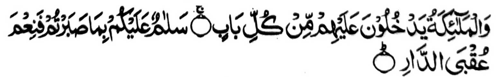
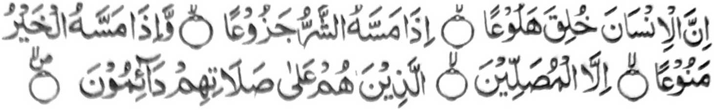
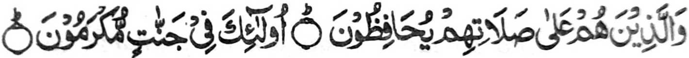
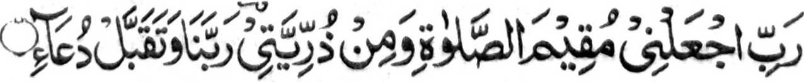
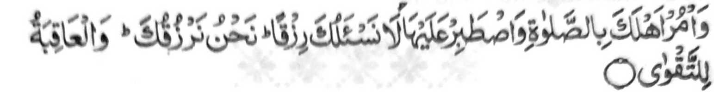

"...Na so manga Mala-ikat na pephamanotea siran ko omani isa a pinto: (Gi-i ran tharo-on a:) Kalilintad a si-i rekano sabap ko kiyaphantang iyo! Na miyakapiya-piya so miyakatondog a inged (a bagi-an niyo)." [Soorah:Ar-Ra’d:23-24]

"Mata-an! a so manosiya na inaden a titiyakha-an, a mala-i inam. Igira miyasogat sekaniyan a marata na gi-i khaminan; na igira miyasogat sekaniyan a mapiya na simpenen niyan; inonta so manga barasambayang, a so siran noto na so Sambayang iran na tatatapen niran." (Soorah:Al-Ma'arij: 19-23)
Oriyan o kiniropa-an Niyan ko saba-ad ko manga sipat angka-iya inikalimo a manga tao, na pitharo o Allah so lagidaya,

"Go siran noto na so Sambayang iran na sisiyapen niran. Siran i khatago ko manga Sorga, a khisesela-an siran." [Soorah:AI-Ma'arij:34-35]
Liyo pen sangka-iya miyanga a-aloy a manga Ayaat, na aden pen a madakel a Ayaat sa Qur'an na go inisogo iyan so Sambayang go biyantog iyan ago miniphoro-poro iyan so siran a manga tao so kaphiya-piya iran ko Sambayang. So Sambayang na titho a mala a ontong. Giya-i sabap a so Muhammad (Sallallaho 'Alaihi Wasallam) na inibetho niyan non a "Ikapiya o kailay aken", go so Ibrahim (Alaihis Salaam) na piyangeni niyan ko Allah,

"Kadnan ko! Baloya ko Ngka a pephamayandeg ko Sambayang, go so saba-ad ko manga moriyatao aken, Kadnan nami! Go tarima-a ngKa so pangeni aken." [Soorah: Ibrahim:40]
Samanaya na so Sesela-an a Nabi o Allah, a bithowan Niyan sa Khalil, na pephangeni niyan ko Allah a mipamayandeg iyan so Sambayang phiya-piya ago lalayon. So Allah a Maporo na Sekaniyan den i somiyogo ko pekhababaya-an Niyan a Nabi (Sallallaho ’Alaihi Wasallam) sa:

"Na sogo-on ka ko manga ta-alok reka so Sambayang, go phantang ka si-i Rekaniyan. Di Kami reka phangeni sa pageper. Sekami i pephageper reka na so khabolosan (a mapiya) na bagi-an o manananggila."[Soorah Ta Ha: 132]
Miya-aloy sa Hadith a igira aden ko pamiliya o Nabi (Sallallaho 'Alaihi Wasallam) a siyagad a maragen ko apiya antona-a sabap na ipezogo iyan kiran so Sambayang go lalayon niyan kiran pembatiya-an angka-iya Ayaat. So langono manga Nabi o Allah (’Alaihimos Salaam) na miyapanothol a gi-i siran zambayang igira siyagad siran a maregen. Ogaid na phamli-in! ka tanto tano a di i-inengka-an ago thotomangkedan so Sambayang a, makimpen lalayon tano gi-i tharo-on a paparatiyaya-an tano so Islam na go ipenggolaln tano so manga sogo-an niyan ogaid na di tano bo tatago-on sa ginawa. Aya mata-an, na o aden a tao a mamayandeg ko kandolona niyan reketano ago phaki-inengka iyan reketano sekaniyan, na ba tano den gi-i zandagi ago gi-i tano zomanen go pezopaken tano sekaniyan, na daden a khabinasa-an a rowar reketano.
Apiya so gi-i mamayandeg ko Sambayang, na aya kipephamayadegen niran non na si-i ko okit a khapakay a tharo-on tano a baden pekhakowa kasabelawan so Sambayang, sabap sa daon so titho a kinggolalan o manga rokon niyan go so gi-i ron kaphiya-piya-i ago so kathapapay a madadalemon a wajib. So ladiyawan a minigoris o Nabi (Sallallaho 'Alaihi Wasallam) ago pinggola-ola o manga kiyabantogan a manga Sahabah niyan, na baloin tano a takes o kapephaginetao tano. Tinimo aken so totholan ko Sambayang o manga Sahabah sa isa a kitab, a bebethowan sa 'Totholan ko Manga Sahabah" na diden kailangan so ka-aloya tano ron si-i pharoman. Ogaid, na migay ako sa manga tothol a kinowa ko kiyapaginetao o saba-ad a manga pati-is a manga tao a phakatondog si-i. So manga paparangayan ago manga katharo o Nabi (Sallallaho 'Alaihi Wasallam) makapantag si-i na si-i matatago ko Pinto III.